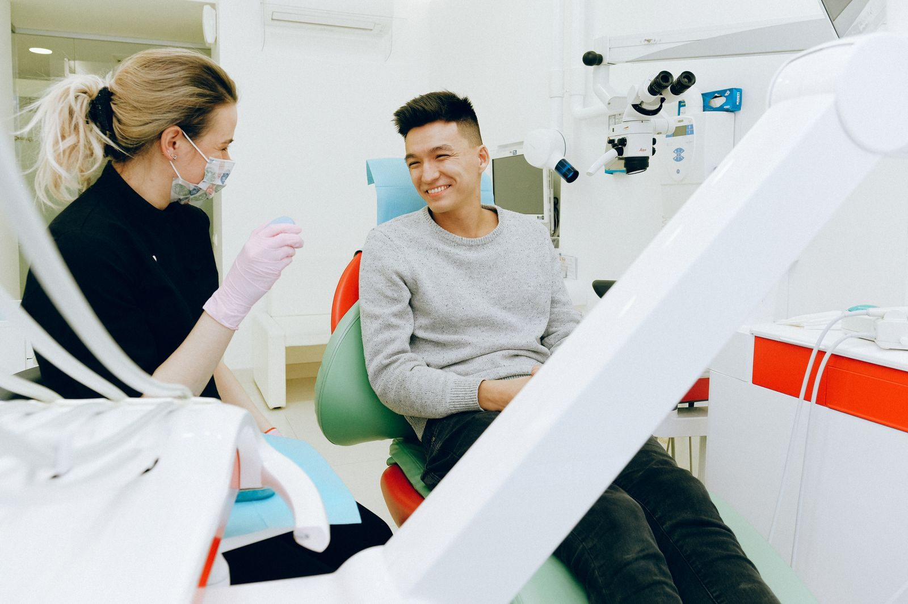

Granjas Valle de Guadalupe, C.P. 55270. La ficha de Google lo publica abierto todos los días, las 24 horas. El teléfono de esa ficha es el 56 4001 1373.
Agendar por WhatsApp56 4001 1373No hay un menú oficial de tratamientos ni precios. Estos son servicios habituales de un consultorio dental;
Revisión y atención odontológica general.
Extracciones, incluidas muelas del juicio, según agenda.
Google publica el consultorio abierto las 24 horas. Confirma por teléfono o WhatsApp antes de acudir, sobre todo de madrugada.

La ficha ubica el consultorio en Gobernador Gral. José Vicente Villada 63, manzana 002, C.P. 55270. Algunos directorios acortan el nombre de la calle. La zona está cerca del límite sur del municipio.
El teléfono de Google es el 56 4001 1373.
✔ Google lo publica las 24 horas, todos los días
✔ Tel. 56 4001 1373
Calificación 3.9 ★ en Google
★★★★★
“Fui a las 4am porque me dolía la muela, la extrajo la doctora muy rápido y sin molestias. […] está todo limpio y tal cual está en las fotos.”
★★★★★
“Excelente trato por parte de la Doctora Mariana. Muy amable, fui a una extracción de muela del juicio y sin dolor.”
★☆☆☆☆
“Una atención muy mala […] mi niña de 12 años iba con un dolor de muela muy fuerte y no nos quiso atender […] la atención de 24 horas.”
★☆☆☆☆
“Me dijeron que era ‘normal’ que se rompieran mis dientes tras su trabajo […] Lo grave no fue el error, sino la inmadurez con la que se negó a reconocerlo.”
Datos de contacto, horario y ubicación.
Sí, abrimos todos los días, las 24 horas.
Gobernador Gral. José Vicente Villada 63, manzana 002, Granjas Valle de Guadalupe, C.P. 55270, Ecatepec de Morelos.
56 4001 1373.
Llama o escribe al 56 4001 1373.
📍 Dirección: Gobernador Gral. José Vicente Villada 63, manzana 002, Granjas Valle de Guadalupe, 55270 Ecatepec de Morelos, Méx.
📞 Teléfono: 56 4001 1373
| Lunes a domingo | 24 horas |
Llama o escribe por WhatsApp al 56 4001 1373 para confirmar disponibilidad.
Agendar por WhatsApp